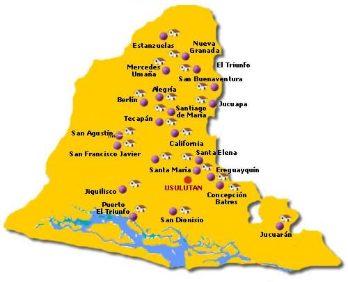

Fundado por ley de 22 de junio de 1865 sancionada por el Presidente Dr. Francisco Dueñas. Su cabecera es la ciudad de Usulután y constó de los partidos o distritos de Usulután, establecido en 1786, y los de Jucuapa, Santiago de María (antes Alegría) y Berlín creados respectivamente por leyes de 4 de febrero de 1867, 9 de marzo de 1892 y 12 de noviembre de 1940.
Su cabecera (ciudad principal) es Usulután que cuenta con una población de 73 064 habitantes según censo del 2007, ocupando la posición número 15 en población. Sus lugares turísticos más importantes son el volcán de Usulután, la laguna de Alegría en el volcán Tecapa y la bahía de Jiquilisco pero la ciudad más pintoresca es la Ciudad de Jucuapa que cuenta con el Cerro el Tigre, la frescura y el sabor del oriente con el incomparable paisaje de sus cafetales y el calor de su gente hospitalaria que hacen de Jucuapa una ciudad única al norte del departamento de Usulután con acceso en la parte Norte por la autopista Panamericana a solo 118 kilómetros de Ciudad Capital San Salvador y por el sector Sur por la Autopista Litoral cruzando el Municipio de Santa Elena.
Se cultiva sobre todo caña de azúcar y en menor proporción, tabaco de excepcional calidad, café y cereales. La cabecera departamental es Cojutepeque, una de las ciudades relevantes de El Salvador conocida como "la ciudad de las neblinas", en años anteriores, esta ciudad, se destacó por ser un significativo centro comercial, importante para la manufactura del tabaco, el dulce de panela y café de excelente calidad. El trabajo artesanal se encuentra muy desarrollado en todo el departamento; cabe mencionar las localidades de Tenancingo, donde se realizan trabajos de cestería y se fabrican sombreros y esteras, y Suchitoto, centro turístico donde se conservan construcciones coloniales y se desarrolla la alfarería, cestería y pirotecnia.